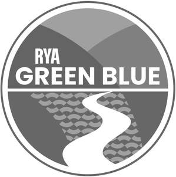

Trade Mark Journal No.2025/016 18 April 2025
UK00004158694 11 February 2025 (9,16,41,42)
Mark 1
Mark 2

- Class 9
- Computer hardware; computer software; pre-recorded computer programs; computer software and firmware for or to enable uploading, downloading, accessing, posting, displaying, tagging, blogging, streaming, linking, sharing or otherwise; computer software and firmware for or to enable the provision of electronic media or information via computer or communication networks; electronic publications; instructional and educational apparatus and instruments; tapes, cassettes, films, video cassettes, video discs, compact discs, DVDs and CD-Roms, all of the aforesaid carrying pre-recorded content; memory sticks; parts and fittings for the aforesaid goods.
- Class 16
- Printed matter; printed publications; printed certificates; educational and instructional material; stationery; pens; pencils; paper weights; stickers; adhesives for stationery purposes; address books; pen cases; notepads; bags of paper or plastic for packaging; advertisement boards of paper or cardboard; boxes of cardboard or paper; folders; bookmarks; calendars and diaries; greetings cards; postcards; pencil sharpeners; erasers; books; magazines; journals; newspapers; periodicals; photographs; instructional and teaching materials; programs; maps; bookmarkers and decals; document holders or document files (stationery); drawing boards; drawing pads; banners, pennants, posters, artists' materials; personal organisers; parts and fittings for the aforesaid goods.
- Class 41
- Education and training services; education and training services relating to environmental issues and awareness; organising, arranging and conducting conferences, congresses, training seminars, symposiums, and workshops; provision of courses of instruction, lectures and seminars; certification of education and training awards; publication of electronic books, magazines, newspapers, journals, periodicals, and other publications on-line; organisation of sporting activities and events; organisation of balls, education and sports competitions; provision of training facilities; production of radio and television programmes; provision of facilities for sporting events; research and consultancy services, all relating to education and training; entertainment and educational services, namely, live performances, sporting events, cultural, social and family events, and lectures; publication of electronic journals and web logs, featuring user generated or specified content; providing information related to news, cultural, sporting, social and family events and academic matters from searchable indexes and databases of information, including text, electronic documents, databases, graphics and audio visual information, on computer and communication networks; editing written texts; educational, social, sporting and cultural activities provided via a club, society or group; provision of distance learning via an on-line learning platform; consultancy, information and advisory services relating to all the aforesaid services.
- Class 42
- Information and advisory services relating to environmental issues; information and advisory services relating to boating and the environment; scientific research services; scientific and technological services; research and design relating to scientific and technological services; computer diagnostic services; measurement services; data storage; preparation and compilation, including analysis, evaluation and presentation of technical and statistical data; provision of research facilities; technical data analysis services; including the provision of such services via computer networks on-line from a computer database or provided via the Internet; advisory, consultancy and information services relating to the aforementioned services.
Royal Yachting Association
Representative: Barker Brettell LLP